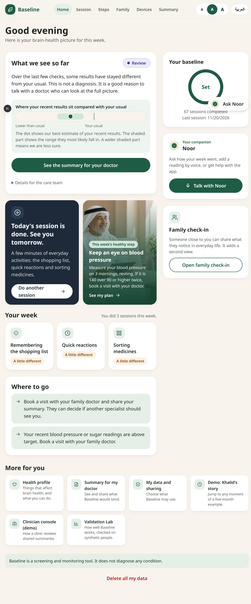
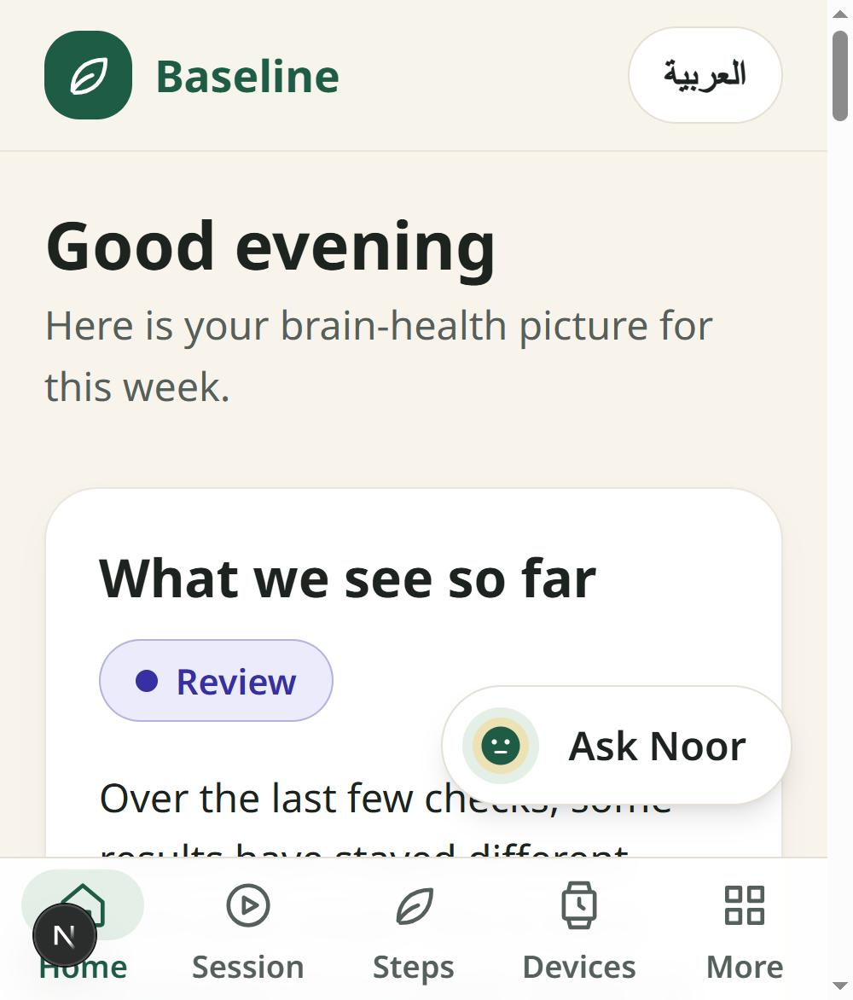
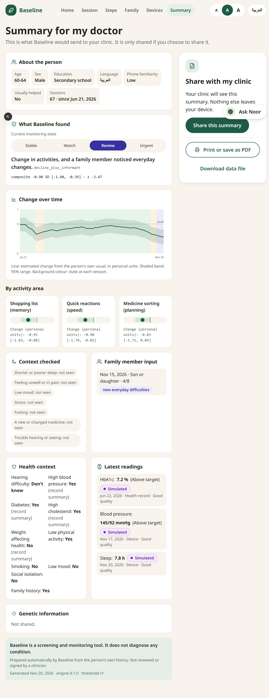

A bilingual Arabic and English app that builds each person's own brain-health baseline from a few minutes of everyday activities, then looks for meaningful change over time, and turns it into a clear, safe next step.
November 2026 · Source: github.com/Krixna-Kant/Baseline · Every number in this brief traces to our evidence register or validation report.
average time from first symptoms to a dementia diagnosis at a UAE hospital (median 24 months). Average age at diagnosis was 78.
of dementia is potentially preventable or delayable through 14 modifiable risk factors, such as blood pressure, hearing, inactivity and isolation.
age-standardised hypertension and diabetes among adults screened in Abu Dhabi's Weqaya programme: two of those modifiable risks.
Most cognitive checks compare a person with a population average. Those averages were mostly built on Western groups and are strongly shaped by education and language, so a single check can mislabel people and misses slow change in people who start high. And a one-off check in a clinic only happens once someone already worries.
Stable Watch Review Urgent
Each state has fixed, reviewed wording and one next step. People never see numbers that invite self-diagnosis; clinicians see the full detail.
One bad day only triggers a few repeat checks (Watch). Review is suggested only when the change stays across independent repeat checks, or when a family member also reports everyday changes. A slow-change rule catches gradual drift that never crosses the line on a single day.


Small weekly goals built on modifiable risks: blood pressure, sugar, hearing, vision, sleep, activity, diet, social contact. Ramadan-aware wording.
A short Arabic or English questionnaire for someone close to the person adds a second view of everyday life.
Blood pressure, sugar, sleep and steps, typed, spoken or from a device. In the prototype, devices are simulated and labelled as such.
A voice-capable agent explains results and records readings through a fixed tool contract. Red flags go straight to 998 guidance. No identifiable health data is sent to a language model.
A one-page packet: state, why it was suggested, trajectory, context, family input, risk factors and readings. Shared only if the person chooses.
Clinics see why each referral was suggested, decide, and record what happened, so the system can be audited and improved.

A simulated cohort of 10,000 people, followed for two years, with realistic dropout, bad days, Ramadan, and differences in education and phone familiarity. 635 of them develop a slow decline. Success criteria were written down before the run. We report what fails as well as what passes.
| Pre-stated criterion | Target | Result | Met |
|---|---|---|---|
| Retest reliability (ICC) in Stable users | ≥ 0.75 | 0.88 / 0.94 | Yes |
| 12-month specificity | ≥ 0.95 | 0.974 | Yes |
| False referrals per 1,000 person-years | ≤ 30 | 25.3 | Yes |
| Two-stage vs one-stage rule | Fewer false referrals; ≤ 30 days extra delay | 25.3 vs 58.7; +12 days | Yes |
| Item bias check (3 biased items planted per task) | ≥ 2 of 3 found; ≤ 5% false flags | 3 of 3 in both tasks; 0 false flags | Yes |
| Fairness across groups | Sensitivity gap ≤ 0.10; false-referral ratio ≤ 1.5 | Gap 0.12; ratio 1.47 | No |
12-month sensitivity to simulated decline (95% interval 0.291–0.361)
Share of Review suggestions that are true change (positive predictive value)
Median lead time from simulated onset to Review
Session completion over two years; dropout is the main limit
Our first bias check raised too many false flags. We replaced it with logistic-regression item analysis, which now finds every planted item with no false flags (amendment A4).
The education gap is not yet closed. We tested five fixes. The best one narrowed the gap, but when re-checked on a fresh, held-out cohort it broke the false-referral limit, so under our own rule we did not adopt it (amendment A5).
A smartphone study of 290 adults aged 61–97 reported retest reliability above 0.85 for every task and about 80% adherence within week-long bursts (register B13).
A year-long remote study saw on-schedule completion fall from 94% to 73% (register B14), which is why we plan bursts, reminders and family support.
A small, consented pilot to check that real sessions, completion and reliability match the simulation's assumptions, before any claims about detection.
Work with a primary-care clinic on the doctor summary, referral wording and how outcomes are recorded and fed back.
Use real data to close the education gap, re-tune thresholds on a held-out group, and connect to health records with consent and UAE data hosting.